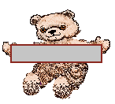

Maligayang Pagdating Sa Aking Bahay!
Come in, but please leave your shoes out the door!

Welcome to my house (translation of the title) where you will learn a little about me, tips for travelling to the Philippines, and some simple Tagalog words/phrases!
Ako! (Me!)
- Name: Mercel Kristin Curioso
- Birthplace: San Pedro, Laguna, Philippines
- Nationality: Filipina
- Birthday: October 29
- Horoscope: Scorpio
- Chinese Zodiac: Ox
Facts About the Philippines
- Form of Governemnt: Republic
- Comprised of 7,640 islands
- Divided into three main islands: Luzon (north), Visayas (middle), and Mindanao (south)
- Capital: Manila
- Currency: Philippine Pesos
- Climate: tropical and moonsoon
- Official Language: Tagalog, English (more than 150 dialects are spoken)
- National Symbol: three stars and sun
- National bird: Philippine Eagle
- Flag Colors: red, white, blue and yellow
- National anthem: Lupang Hinirang
Places to Visit
- El Nido in Palawan
- Puerto Princesa in Palawan
- White Beach in Boracay
- Chocolate Hills in Bohol
- Batad Rice Terraces in Banaue, Ifugao
- Metro Manila capital region
- Mayon Volcano in Albay province
- Surigao del Sur in Caraga Region
Helpful Words & Phrases in Tagalog
- "Po"= An article added to the end of the sentence to show politeness; used when talking to the elders (ex. Kamusta ka po?; Magandang umaga po!)
- Magandang umaga/hapon/gabi = Good morning/afternoon/evening
- Paalam = Goodbye
- Kamusta ka? = How are you?
- Mabuti naman. = I'm good.
- Salamat! = Thank you!
- Walang anuman! = You're Welcome!
- Mabuhay! = Cheers! Good Health!
- Nasaan ang banyo? = Where is the bathroom?
- Magkano? = How much?
- Gusto ko ito. = I like/want this.
- Ayaw ko nito. = I don't like this.
- Pasensya ka na. = Sorry.
- Ako ay nagugutom. = I'm hungry.
- Oo/Hindi = Yes/No
